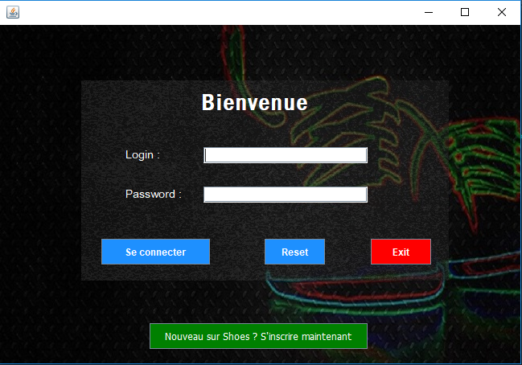
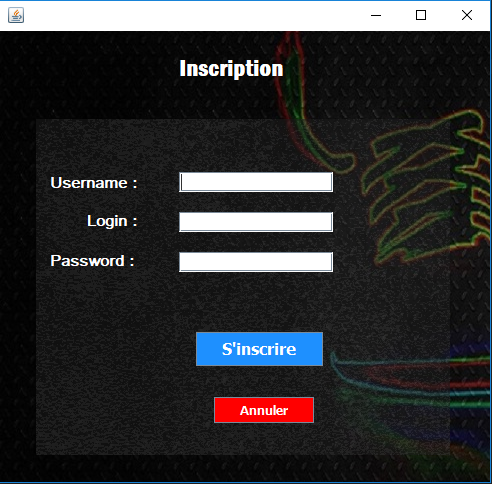
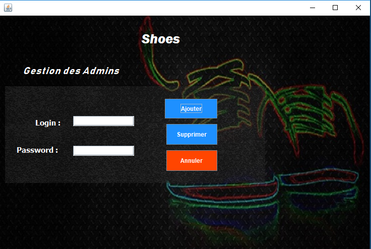
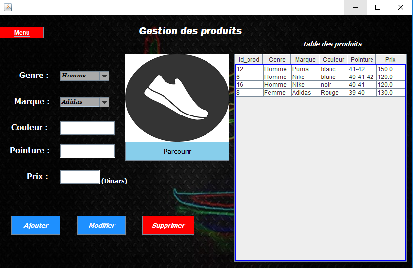
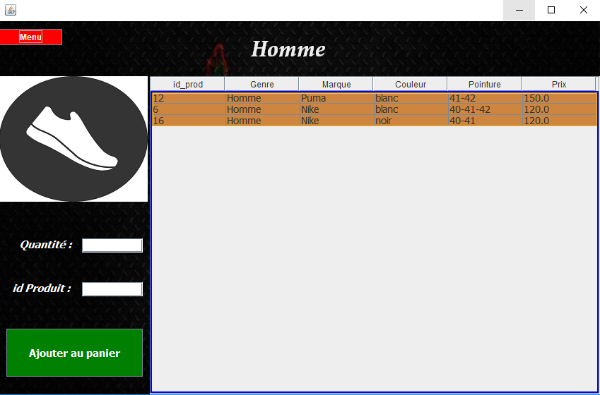

A sales and inventory management application that can facilitate the purchase and sale of products (shoes) in a shop that needs them.
This tool includes the following features:
You can consult my report (in French) via this link : academia.edu/37247596/Application_JAVA_Vente_et_gestion_de_stock
You can see Code and Download the Project From this Github Link
| Login | Register |
|---|---|
|  |  |
| Admin management | Products management |
|---|---|
|  |  |
